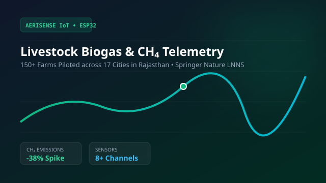

AeriSense
Accepted @ Springer LNNSAI-powered precision livestock monitoring IoT solution. Integrates ESP32 with 8+ environmental sensors (CH₄, NH₃, CO₂, H₂S, VOCs) to track emissions and optimize biogas generation. Surveyed 150+ livestock farms across 17 cities in Rajasthan, piloting the system on 14 commercial farms. Featured in The Times of India, Dainik Bhaskar, and accepted for publication in Springer Nature LNNS.
ESP32 Hardware
IoT Telemetry
Python 3
FreeRTOS
Springer Nature